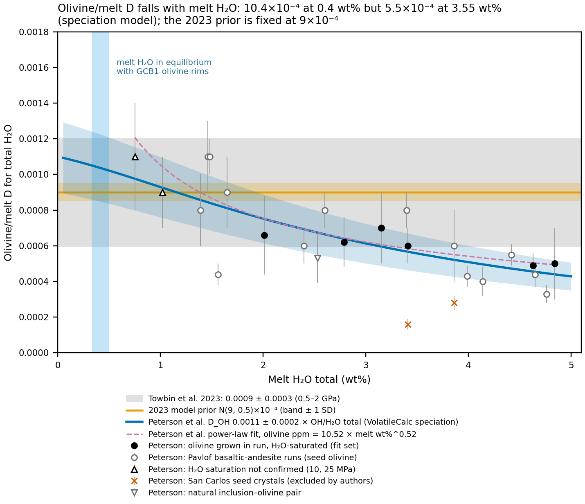
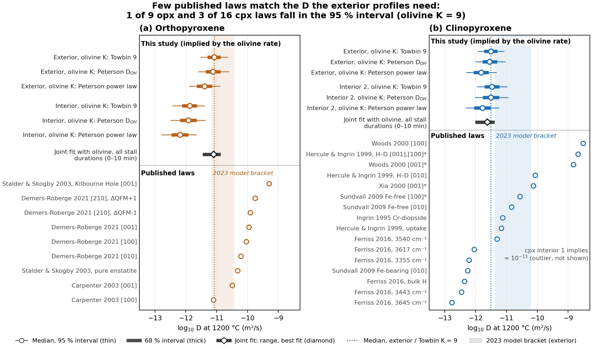
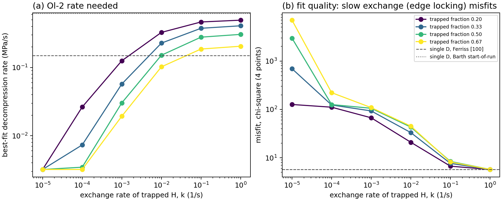
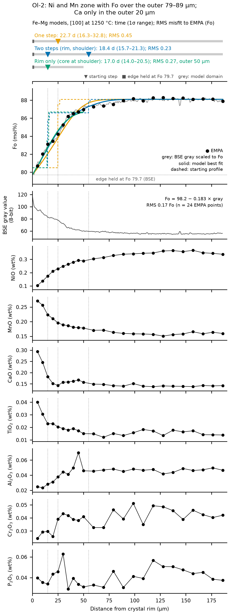
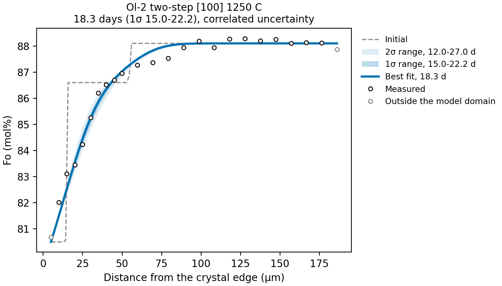

Appendix A — Diffusion model and fits
This appendix holds the method detail behind the decompression rates: the diffusion model and its Bayesian fit, the data and priors, the choice of a fixed uncertainty per profile, the warped-pressure treatment of a falling temperature, the diffusivity laws and partition coefficients, the edge and stall tests, and the supporting tables for the Fe–Mg residence of Ol-2 and for the xenolith exchange fits. The rates themselves are in Chapter 8. The primary start for every fit is the published MiMiC melt (3.549 wt% H2O, 8,529 ppm CO2; saturation 682 MPa); the CO2/Nb start (SR-1, 3.59 wt% H2O, 14,100 ppm CO2) is the second scenario. Tables below that were computed before the change of primary start are marked as CO2/Nb-start tables.
A.1 The decompression model
The model is the one used in the 2023 MATLAB fits, ported to Python (~/Projects/H2O_Diffusion_NAM/decompression/) and reproduced to ≤ 1e-14 relative. Pressure falls linearly, \(P(t) = P_0 - v t\), over a total time \(t_\mathrm{tot} = (P_0 - P_f)/v\). The crystal is a one-dimensional slab of half-width L with a no-flux center and a rim held in equilibrium with the degassing melt:
\[ \frac{\partial C}{\partial t} = D\,\frac{\partial^2 C}{\partial x^2},\qquad \left.\frac{\partial C}{\partial x}\right|_{x=0} = 0,\qquad C(L,t) = K\,H\big(P(t)\big),\qquad C(x,0) = K\,H(P_0) \tag{A.1}\]
C is H2O in the crystal (ppm), H(P) the melt H2O along the degassing path (wt%, Appendix C) and K the mineral/melt partition coefficient in ppm per wt% (10⁴ times the dimensionless D of Appendix C). The crystal starts in equilibrium with the melt at P0. That start is justified by the P–T history: from xenolith pickup (about 1.15 GPa) to saturation (923 MPa) the melt H2O is constant, and between saturation and P0 (about 585 MPa) the SR-1 melt loses only 4 % of its H2O, so H in the xenolith minerals and in the phenocryst is free to equilibrate and nothing is lost before P0. The model is a one-dimensional slab; Mutch et al. (2024) show that 1-D fits can underestimate H loss by about 30 % for 3-D crystals.
Exact property 1: one dimensionless time. Rescaling \(\xi = x/L\) and \(s = t/t_\mathrm{tot}\) turns Equation A.1 into \(\partial C/\partial s = \tau\,\partial^2 C/\partial \xi^2\) with the rim value \(K\,H(P_0 - (P_0 - P_f)s)\), where
\[ \tau = \frac{D\,t_\mathrm{tot}}{L^2} = \frac{D\,(P_0 - P_f)}{L^2\,v}. \tag{A.2}\]
The data constrain τ, not D and v separately, so \(v = D(T)(P_0 - P_f)/(\tau L^2)\), and a change of diffusion law rescales the fitted rate exactly (\(v_\mathrm{new} = v_\mathrm{old}\,D_\mathrm{new}/D_\mathrm{old}\)). The discrete scheme is invariant too (≤ 3e-16 relative on all ten 2023 cases). L is not a pure rescaling, because the measured distances are fixed in µm.
Exact property 2: K only scales the profile. The problem is linear and homogeneous, and the initial and rim values are proportional to K, so \(C(\cdot\,; K) = K\,C(\cdot\,; 1)\). With data \(h_i \pm s_i\) and model \(K g_i(\tau, P_0, P_f)\), a Gaussian prior \(K \sim N(\mu_K, s_K^2)\) integrates out in closed form. With \(a = \sum g_i^2/s_i^2 + 1/s_K^2\) and \(b = \sum h_i g_i/s_i^2 + \mu_K/s_K^2\),
\[ \log p(h \mid \tau, P_0, P_f) = -\tfrac12\Big[\sum_i \frac{h_i^2}{s_i^2} + \frac{\mu_K^2}{s_K^2} - \frac{b^2}{a}\Big] - \tfrac12\log\!\big(a\,s_K^2\big) - \sum_i \log\!\big(\sqrt{2\pi}\,s_i\big). \tag{A.3}\]
The closed form matches numerical integration over K to 1e-8. It needs negligible prior mass at K < 0, so K priors wider than about 16 % (1σ) are run as several fits instead.
A.2 Grid posterior, data and priors
Because the dimensionless profile \(G(\xi; \tau, P_0, P_f)\) does not depend on the data, it is tabulated once per case and degassing path: 400 values of log τ (from the explicit solver’s floor to 2.5), nodes at the ends of the P0 and Pf prior ranges interpolated onto 15 × 6 cells, and a spatial grid twice as fine as the 2023 one. The priors sit on the physical parameters, and the posterior
\[ p(\log v, \log D, P_0, P_f \mid h) \propto \exp \ell\big(\log D + \log(P_0 - P_f) - 2\log L - \log v,\ P_0,\ P_f\big)\; p(\log v)\,p(\log D)\,p(P_0)\,p(P_f) \tag{A.4}\]
is evaluated on a grid of 350 log v cells (0.02 dex) × 21 log D nodes × the P0 × Pf cells, with the K-marginal log-likelihood ℓ (Equation A.3) interpolated in log τ. It is exact to grid resolution, with no MCMC noise, and replaces the 2023 Monte Carlo of optimizer solutions, whose spread mixed the D prior, the data noise and optimizer stopping error. Validation: table entries equal direct forward runs; log v quantiles move by less than 0.01 dex when the τ and v grids are doubled; and on synthetic profiles drawn from the priors the 68 % and 95 % intervals contain the truth at their nominal rates. Ascent speed is \(u = v/(\rho g)\) with ρ = 2800 kg/m³.
| Parameter | Olivine Ol-2 | WHT1 exterior opx | WHT1 exterior cpx |
|---|---|---|---|
| Profile points, fixed 1σ | 4 points (4.4–7.9 ppm), 0.25 ppm | 6 points, 20 ppm | 10 points, 20 ppm |
| Half-width L (µm), distance reference | 145, center | 180, center | 115, rim |
| log10 v prior | Flat over 10⁻³–10⁴ MPa/s | same | same |
| log10 D prior | Ferriss [100] at 1200 ± 20 °C | Carpenter [001] at T + 20 K to Carpenter [100] at T − 20 K | 10−6.71 with Ea 100 kJ at T + 20 K to 130 kJ at T − 20 K |
| K (ppm per wt%) | N(9, 1.35) (6 and 12 as alternatives) | Three strategies (Table A.5) | Three strategies (Table A.5) |
| P0 | U(500, 670) MPa | U(600, 670) MPa | U(600, 670) MPa |
| Pf | U(0, 0.5) MPa | U(0, 0.5) MPa | U(0, 0.5) MPa |
The olivine case needs a caveat. Its core holds 7.9 ppm against about 32 ppm for K times the starting melt, so Ol-2 has lost about 75 % of its H, and the fitted rate is set largely by how much core loss K = 9 implies. Scaling the olivine data by a factor s is the same as using K/s, so K and the data must be on the same SIMS calibration. They are: the Towbin et al. (2023) K was built by recalibrating the experiments onto the same revised opx scale as the SIMS dataset (Appendix D).
A.3 Fixed uncertainty per profile
The fits use one fixed 1σ per profile (olivine 0.25 ppm, pyroxene 20 ppm), as in 2023. The alternative is a per-point 1σ. Three variants were fitted on the CO2/Nb-start (SR-1) P–T path with only the likelihood σ changed: the fixed σ; the total 1σ of the SIMS dataset per point (calibration, counting and blank scatter; olivine 0.31–0.43, opx 6–16, cpx 19–32 ppm); and the spot-to-spot σ (counting and blank scatter only, about 4 ppm for pyroxene). The calibration term is shared by all points of a profile, so it acts like a K error rather than scatter. The fixed rows reproduce the primary fits exactly (106 of 106 posterior rows). Table A.2 gives the rates and Table A.3 the misfit check.
| Profile and K | Fixed σ (2023, used) | Total 1σ per point | Spot-to-spot σ per point | Data-estimated σ, calibration in K |
|---|---|---|---|---|
| Ol-2, K = 9 | 0.101 (0.059–0.168) | 0.102 (0.060–0.171) | 0.102 (0.059–0.170) | 0.105 (0.061–0.176) |
| Opx, core/start 411 ppm | 0.181 (0.084–0.401) | 0.146 (0.069–0.314) | 0.165 (0.078–0.352) | 0.170 (0.081–0.368) |
| Opx, opx-anchored | 0.180 (0.080–0.406) | 0.135 (0.063–0.290) | 0.164 (0.077–0.346) | 0.165 (0.076–0.356) |
| Cpx, core/start 390 ppm | 0.611 (0.225–1.643) | 0.679 (0.247–1.846) | 0.500 (0.187–1.330) | 0.583 (0.216–1.562) |
| Cpx, opx-anchored | 0.569 (0.207–1.548) | 0.671 (0.240–1.863) | 0.487 (0.183–1.289) | 0.526 (0.193–1.421) |
The total 1σ moves the pyroxene rates by −25 % to +18 % because it scales with concentration (5–9 % of the value) and so reweights the low-H rim points against the cores; that reweighting, not a wider or narrower σ, shifts the rates. A misfit check asks which σ the data support.
| Profile (points, degrees of freedom) | Fixed σ | Total 1σ | Spot-to-spot σ | σ the data imply |
|---|---|---|---|---|
| Ol-2 (4, 2) | χ² 6.0, p = 0.05 | 3.2, p = 0.20 | 4.0, p = 0.13 | 0.43 ppm (fixed 0.25) |
| WHT1 opx (6, 4) | 0.9, p = 0.92 | 2.6, p = 0.63 | 19.4, p = 0.0007 | 9.5 ppm (fixed 20) |
| WHT1 cpx (10, 8) | 5.1, p = 0.74 | 2.8, p = 0.95 | 107.6, p = 1e-19 | 16.0 ppm (fixed 20) |
Decision: keep the 2023 fixed σ. It is a user-chosen σ that covers natural data scatter (the precedent is Girona & Costa 2013), and with ten points or fewer a reduced χ² is itself poorly determined (Andrae et al. 2010). The total 1σ passes the misfit test only because its shared calibration term inflates the independent noise, and its rate shifts are not supported.
A.4 Variable temperature: the warped pressure
On the P–T path (Chapter 3) the temperature falls, \(T(P) = 1330\ \mathrm{°C} - s\,(2.26\ \mathrm{GPa} - P)\), so D falls with pressure: \(D(t) = D_\mathrm{ref}\,r(T(P(t)))\) with \(r = \exp[-(E_a/R)(1/T - 1/T_\mathrm{ref})]\) and \(T_\mathrm{ref}\) = 1200 °C.
Why it is exact. With reduced time \(\theta = \int_0^t D\,dt'/L^2\) the diffusion equation becomes \(\partial C/\partial\theta = \partial^2 C/\partial\xi^2\) again, and only the rim value as a function of θ changes. For continuous ascent, \(dP = -v\,dt\), so
\[ \int D\,dt = \frac{D_\mathrm{ref}}{v}\int r\big(T(P)\big)\,dP, \qquad P_w(P) = \int_0^{P} r\big(T(P')\big)\,dP'. \tag{A.5}\]
Reduced time is linear in the warped pressure \(P_w\) with the constant rate \(D_\mathrm{ref}/v\). The constant-D problem with rim value \(K\,H(P(P_w))\), run on the warped pressure (with the path and the P0 and Pf priors mapped through \(P_w\)), is the variable-temperature problem, and its fitted v is the true ascent rate. No new solver or approximation is involved (scripts/decompression/fit_pt_path.py).
Activation energies. Each phase uses the mean Ea of its two bracket laws: olivine 130 kJ/mol (Ferriss, one law); opx 144 kJ/mol (Carpenter 127 and 161); cpx 115 kJ/mol (the 100 and 130 kJ ends of the 2023 cpx bracket).
Slopes and families. Fits are run at slopes of 30–150 °C/GPa in 15 °C/GPa steps. The scatter of the start (N(1330, 15) °C, N(2.26, 0.10) GPa) is carried as an effective slope with the same temperature at 30 MPa. Each family’s rate is a mixture of the per-slope posteriors (lognormal from the median and 68 % range) over that family’s slope distribution.
Controls.
- With r = 1 the warped fits reproduce the isothermal fits of the MiMiC start exactly: 0.143 (olivine), 0.256 (opx) and 0.728 (cpx) MPa/s (opx-anchored K) [CHECK: the exact-reproduction control was run on the CO2/Nb start, 0.155, 0.290 and 0.874].
- A direct implicit solver with D(T(P(t))) agrees with the warped model to 0.0215 wt% at slopes of 30, 90 and 150 °C/GPa. The two solvers differ by the same amount at 1200 °C, so the warp itself adds no error.
- Running the pyroxenes with the ends of their Ea brackets moves their rates by ±10 % (opx 0.109–0.134, cpx 0.397–0.477 MPa/s at 105 °C/GPa).
- The degassing path stays the 1200 °C MagmaSat path; evaluating solubility along the P–T path changes the rates by ≤ 3 % (Appendix C).
All three phases slow by nearly the same factor on the path (0.63–0.69 across the SR-wide envelope), because their Ea (115–144 kJ/mol) are similar. The path changes the rates but not the disagreement between phases.
Accelerating ascent. For a rate \(v(P) = v_0\,a(P)\), \(dt = -dP/(v_0 a)\), so \(\int D\,dt = (D_\mathrm{ref}/v_0)\int r/a\,dP\). The same fit on \(P_w = \int_0^P r/a\,dP'\) is exact, and its fitted rate is \(v_0\), the rate above the ramp. - Shapes: \(a = 1\) above \(P_a\) and \(a = F - (F-1)P/P_a\) below it, with F = 2, 5, 10 and \(P_a\) = 60, 200 MPa. - Prior: the lower edge of the rate prior is moved down by \(\log_{10}F\). - Derived rates: the mean rate over an interval (\(\Delta P / \int dP/(v_0 a)\)) and the surface rate (\(F v_0\)) are fixed multiples of \(v_0\), so the slope-family mixture is taken on \(v_0\) and scaled. - Control: the constant shape reproduces the path fits to 6 × 10⁻¹⁷ MPa/s. - Scope: Ol-2 only, K = 9.
Higher starting CO2. Closed-system MagmaSat paths from the CO2/Nb start, SR-1 (same melt, H2O, Fe3+/FeT and 1200 °C) at 29,800 and 36,000 ppm CO2. They are fitted for Ol-2 (K = 9) and the WHT1 exterior opx and cpx (all K strategies) over the same slope grid. The 14,100 ppm path reproduces the path fits to 2 × 10⁻¹⁶ MPa/s, and the primary path’s hash is unchanged by the rebuild.
Code. scripts/decompression/fit_path_variants.py {accel|co2} and plot_path_variants.py; outputs in results/decompression/path_variants/.
A.5 Olivine diffusivity
Why [100]. Ol-2 is a host-scoria phenocryst (Fo 87.8 core to 84.3 rim, TiO2 140–210 ppm), inside the Ferriss calibration range (Fo 85–95) at the core and at its boundary toward the Barth et al. (2019) range (Fo 75–85) at the rim. Its SIMS traverse runs along [100]. Orientation matters: along [010] or [001] the Ferriss laws are 0.03–0.06 times the [100] value, and a profile perpendicular to a random face would average about 0.36 times [100]. Because the profile is along [100], orientation does not explain the fast rate.
Laws (Table A.4). 55 olivine H diffusivity laws from 18 sources are transcribed in data/olivine_h_diffusivity/laws.csv, and the pyroxene laws in data/pyroxene_h_diffusivity/laws.csv and at_1200C.csv. Each olivine law is passed through the unchanged Ol-2 posterior (scripts/decompression/olivine_d_laws.py; wet-start rates in results/decompression/olivine_d_laws_wet/). The rate scales linearly with D (property 1), and the current law reproduces the main fit, which checks the run.
| Law | Phase, axis | log10 D0 (m²/s) | Ea (kJ/mol) | log10 D at 1200 °C | Role; isothermal rate, CO2/Nb start (MPa/s) |
|---|---|---|---|---|---|
| Ferriss et al. 2018 | Olivine [100] | −5.4 | 130 | −10.01 | Primary; 0.155 (MiMiC start: 0.143) |
| Ferriss et al. 2018 | Olivine [001] / [010] | −6.6 / −6.9 | 130 | −11.21 / −11.51 | Orientation bound; 0.0098 / 0.0049 |
| Barth et al. 2023, end of run (Etna Fo 90) | Olivine [100] | −4.63 | 154 | −10.09 | Closest natural analog; 0.129 |
| Barth et al. 2023, start of run | Olivine [100] | −2.94 | 182 | −9.39 | Mobile-H law of the edge model; 0.64 |
| Barth et al. 2019 / Barth & Plank 2021 (Fo ~80) | Olivine [100] | −5.0 | 125 | −9.43 | For Fo 75–85; 0.59 |
| Jollands et al. 2019, Si-vacancy | Olivine [100] | −4.1 | 145.5 | −9.26 | 0.87 |
| Proton-polaron (Li et al. 2022) | Olivine [100] | −3.5 | 145 | −8.64 | Mechanism bound; 3.6 |
| Proton-vacancy (Li et al. 2022) | Olivine [100] | −1.2 | 279 | −11.09 | Mechanism bound; 0.013 |
| Proton-vacancy (Demouchy & Mackwell 2006) | Olivine [100]/[010] | −4.5 | 204 | −11.73 | Mechanism bound; 0.0029 |
| Carpenter 2003 (San Carlos enstatite) | Opx [100] | −6.6 | 127 | −11.10 | Low end of the 2023 opx bracket; matches the implied opx D |
| Carpenter 2003 | Opx [001] | −4.788 | 161 | −10.49 | High end of the 2023 opx bracket |
| Demers-Roberge et al. 2021 (Al-poor enstatite) | Opx [100] / [010] / [001] | −5.11 / −4.93 / −5.52 | 139 / 149 / 125 | −10.03 / −10.21 / −9.95 | Comparison; 7–20× too fast for one ascent |
| 2023 cpx bracket (“after Ferriss 2016 for 0.07 Al(IV)”) | Cpx | −6.71 | 100–130 | −10.26 (100 kJ) | 2023 prior; extrapolated from Ferriss 2016 (no published Al equation) |
| Ferriss et al. 2016, bulk H (Kunlun diopside) | Cpx | −8.8 | 100.4 | −12.36 | Comparison |
| Ferriss et al. 2016, 3540 cm⁻¹ band | Cpx | −6.7 | 130 | −11.30 | Near the implied cpx D |
| Ingrin et al. 1995 (Cr-diopside) | Cpx | −6.30 | 136 | −11.11 | Near the implied cpx D |
| Hercule & Ingrin 1999, uptake | Cpx | −6.7 | 126 | −11.16 | Near the implied cpx D |
- Along [100] the Barth and Jollands laws are as fast as Ferriss or faster: Barth 2023 0.83 times (end of run) to 4.1 times (start of run), Barth 2019 3.8 times (restricted to Fo 75–85 by Barth & Plank 2021), Jollands 2019 5.6 times. Barth 2023 also notes that fixing the edge at zero, as Ferriss did, underestimates the diffusivity, which points the same way.
- Only orientation or mechanism can make SR slow. Cinder-cone-like rates (0.005–0.04 MPa/s) would need a profile along [010] or [001] (0.03–0.23 times) or the proton-vacancy mechanism along [100] (0.02–0.08 times). For a magmatic phenocryst like Ol-2, Barth 2023 applies directly, and its [100] laws are the fast ones. Ol-2 is Fo 84–88, where Barth 2023 finds Fo the main control (fastest at Fo 79), so its true [100] D lies, if anything, between Ferriss and Barth 2019, which would make the rate faster.
- Fe-free forsterite laws (Jollands 2016, Padrón-Navarta 2014, Demouchy & Mackwell 2003) are kept for context only.
A.6 Olivine/melt partitioning

Two published treatments are compared (Figure A.1, Table A.5):
- Towbin et al. (2023): constant K = 9 ppm per wt% (0.0009 ± 0.0003). It combines earlier experiments recalculated onto the revised opx-standard SIMS calibration (KBH-1 = 202 ppm) with inclusion–olivine pairs, and it resolves no dependence on melt H2O or pressure below 2 GPa. Its ±33 % range is run as three fits (K = 6, 9, 12), each with a 15 % prior. The 2023 MATLAB prior, N(9, 0.5), was six times narrower than the paper; the deposited Fig. 11 caption value of 0.009 is a typo for 0.0009.
- Peterson et al. (Am Min 111): olivine H follows melt OH, with D_OH = 0.0011 ± 0.0002 and the OH fraction from VolatileCalc-basalt speciation (
scripts/model_choices/speciation.py, which reproduces their 25 glasses to ≤ 0.005 wt%). The effective K is then 6.5 at 2.72 wt% melt H2O, 9.5 at 0.9 wt% and about 11 below 0.3 wt%. It enters the fit as an effective path, K0 × OH(H), with K0 = D_OH ~ N(11, 1.8) integrated out as before.
The Peterson power law is only a sensitivity bound. Peterson et al. print \(C_\mathrm{ol} = 10.52\,C_\mathrm{melt}^{0.52}\) once, “for ease of adaptation of existing code”, fitted to six H2O-saturated grown-olivine runs spanning 2.0–4.8 wt% melt H2O; an unweighted refit of those six gives a coefficient of 10.2 ± 2.3 and an exponent of 0.54 ± 0.17. D_OH and the power law agree above about 1.5 wt% (17.6 against 17.7 ppm at 2.72 wt%) but diverge below it: the power law’s effective K rises without limit as melt H2O approaches zero (19 at 0.3 wt%, 32 at 0.1 wt%), while D_OH levels off near 11. On the wet path the power law gives 0.083 MPa/s extrapolated and 0.104 when K is held constant (12.1) below the lowest experiment (0.75 wt%). About a third of the halving comes from that extrapolation; the rest comes from 0.75–2 wt%, constrained only by two undersaturated runs about 200 °C hotter. The olivine rate is most sensitive to K in the last 1–2 wt% of degassing, where the rim forms and partitioning is least constrained. D_OH is therefore the Peterson case, and the power law is a bound on low-H2O partitioning, not a preferred model.
| Phase | Strategy | K (ppm per wt%) | Prior 1σ | Basis | Wet-start isothermal rate (MPa/s) |
|---|---|---|---|---|---|
| Olivine | Towbin et al. 2023 | 9 (6, 12 as alternatives) | 15 % | Recalibrated experiments and inclusion pairs | 0.143 (K = 6: 0.355 on the CO2/Nb start) |
| Olivine | Peterson D_OH | 11 × OH/H2O (6.5 at 2.72 wt%, about 11 below 0.3 wt%) | D_OH ~ N(11, 1.8) | Melt OH speciation | 0.146 (0.94×) |
| Olivine | Peterson power law | 10.52 × H0.52 / H | none | Six-run convenience fit | 0.104 held to calibration; 0.083 extrapolated |
| Opx | Core/start | Intact interior core ÷ H(P0): 411 ppm ÷ 3.48 wt% ≈ 118 | 10 % | Cores equilibrated with the start | 0.29 |
| Opx | Opx-anchored (= experiment) | Novella et al. 2014 × 0.93 at the WHT1 opx Al2O3 = 117.7 | 15 % | Growth experiments on the revised opx scale | 0.256 |
| Cpx | Core/start | Intact interior core (390 ppm) ÷ H(P0) | 10 % | As opx | 0.87 |
| Cpx | Opx-anchored | Opx K × the intact cpx/opx core ratio (390/411) | 15 % | Mineral-pair equilibrium | 0.728 |
| Cpx | Experiment | Recalibrated O’Leary eq. 10 refit (WHT1 0.0073–0.0074, × 10⁴) × {0.61, 1, 1.65} | 15 % each | Growth experiments | Sensitivity only |
A.7 Pyroxene diffusivities and partitioning
K strategies. The xenolith pyroxenes did not grow from the host melt: H that diffuses into them decorates inherited defects, so experimental K are a prior, not a law. The evidence that they re-equilibrated with the host is that all three phases scale with the magma between volcanoes and that cpx/opx in the same xenolith (0.96–1.38) matches the experimental mineral/mineral ratio (Aubaud et al. 2004: 1.4 ± 0.3). Each pyroxene profile is therefore fitted three ways (Table A.5): core/start (the boundary starts at the measured core, the 2023 approach), opx-anchored (Novella × 0.93 for opx, the opx value times the cpx/opx core ratio for cpx), and experiment-based. The 0.93 factor puts Novella’s opx on the revised opx SIMS scale of the xenolith data (Towbin et al. 2023). The 2023 priors (opx N(90, 5), cpx N(120, 5)) have no literature source and are not used.
The intact cores fix the start. The deepest core points of the interior WHT1 grains (opx 413.5 and 408.5 ppm, mean 411; cpx 375.6 and 404.4, mean 390) are taken as the cores that kept the host-melt value (scripts/decompression/fit_wet_primary.py). With them, core/start K for opx is about 118, equal to the opx-anchored 117.7, and the opx core implies 3.48 wt% melt H2O, within 2 % of the MiMiC start (3.549) and 3 % of the CO2/Nb start (3.59). Only the two deepest points reach these levels (409–413 ppm), while two grains flatten near 300–320 ppm; the main text treats that as an uncertainty in K or in the starting H2O (Chapter 9). The exterior opx (0.5 mm from the xenolith exterior) is effectively unbuffered, and the exterior cpx (7.5 mm in) is moderately buffered, which changes its implied D by less than 0.1 log units.
Pyroxene D from the olivine rate. The 2023 approach fits olivine first and then asks what pyroxene D its rate implies. Property 1 makes this exact: a pyroxene profile fixes \(\tau_\mathrm{px}\), so a known v gives \(\log D = \log\tau + 2\log L + \log v - \log(P_0 - P_f)\). Two versions were run (pyroxene_d_from_olivine.py, pyroxene_d_on_path.py, joint_d_fit.py):
- Method A combines each pyroxene’s τ posterior (flat log D prior, 10⁻¹⁵ to 10⁻⁸ m²/s) with independent draws of the olivine v posterior. Check: the implied opx-exterior D equals the bracket midpoint × v_ol/v_opx (10−11.08 against 10−11.09).
- Method B fits one history to Ol-2, the WHT1 exterior opx and cpx together, with free log D for opx and cpx and olivine fixed at Ferriss [100]. Run on the P–T path with
joint_d_fit.py --slope S, each phase diffuses on its own warped clock (same Ea as above). The warped-time solver agrees with the warped-pressure model within 0.21–0.55 % of the initial value, the same as at 1200 °C (0.24–0.57 %).
| WHT1 exterior | Isothermal 1200 °C | On the path: D at 1200 °C (SR-wide) | On the path: D at the water-loss temperature (55 MPa) |
|---|---|---|---|
| Opx, core/start; opx-anchored | −11.06; −11.05 | −11.05 (−11.26 to −10.85); −11.04 | −11.25 (−11.54 to −10.96); −11.24 |
| Cpx, core/start; opx-anchored | −11.54; −11.51 | −11.57 (−11.77 to −11.37); −11.54 | −11.73 (−12.02 to −11.45); −11.70 |
| Joint fit, opx; cpx (82.8 °C/GPa) | −10.98; −11.47 (isothermal joint) | −11.00; −11.53 | not reported |
With the MiMiC start one continuous ascent fits all three phases, and on the P–T path the joint fit gives 0.100 MPa/s at 82.8 °C/GPa (χ² 20.6 for 20 points; CO2/Nb start 0.112 MPa/s, χ² 19.5). The opx sits on Carpenter 2003 [100] (San Carlos enstatite, the slow axis), and the cpx on the slow natural Cr-diopside laws (Ingrin 1995; Hercule & Ingrin 1999 uptake) and the Ferriss 2016 3540 cm⁻¹ band, about 2.5 times below Ingrin 1995. The faster opx laws (Demers-Roberge 2021, on Al-poor enstatite with 0.11 wt% Al2O3) would need olivine rates about 7–20 times faster. The SR opx carries 3.3–3.9 wt% Al2O3 and the cpx is Cr-diopside, so the slow Al- and Cr-bearing laws are the plausible ones. Figure A.2 compares the implied diffusivities with published laws. The cpx upper bound of the 2023 bracket (\(10^{-6.71}\exp(-100\ \mathrm{kJ}/RT)\)) was the thesis estimate for a cpx with 0.07 tetrahedral Al, extrapolated from Ferriss et al. (2016), who publish laws for Kunlun diopside but no equation for the Al dependence; its prefactor matches their 3540 cm⁻¹ band law and its activation energy their bulk-H law. The implied cpx D lies just below the bracket’s lower end.

A.8 Olivine edge tests
Measured olivine edges often stay above zero, in natural phenocrysts and in dehydration experiments (Newcombe, Ferriss, Barth), which suggests a diffusion–reaction process near the rim. Two treatments were tested on Ol-2.
The final-pressure prior (scripts/decompression/olivine_pf_sensitivity.py). In the NAM model the edge value at the end of ascent is K × H(Pf), the treatment of Barth et al. (2024). The 2023 prior capped Pf at 5 bar and the posterior pressed against it (3.3 bar). Widening it to 0–20, 0–50 and 0–200 bar moves the fitted Pf to 10–17 bar (edge boundary 1.8–2.4 ppm) and the rate within 0.155–0.164 MPa/s with K = 9 (0.146–0.160 with Peterson D_OH). Given room, the data prefer a quench pressure of about 1–2 MPa, comparable to the about 2 MPa used by Newcombe’s group. Ol-2 is insensitive because its outermost analysis is 23 µm in (4.4 ppm), so the profile does not sample the true edge.
A two-population model after Barth et al. (2023) (scripts/decompression/olivine_barth_effects.py). Mobile H diffuses with the Barth start-of-run [100] law (4 × 10⁻¹⁰ m²/s at 1200 °C) and is in equilibrium with the melt at the edge; trapped H is immobile and relaxes toward r × mobile at a rate k; the total equilibrium partitioning is K = 9. In the fast-exchange limit this is one species with \(D_m/(1 + r)\); with slow exchange the mobile H drains while the trapped H stays, giving a high edge and an apparent D that falls with time, Barth’s “apparent locking of H+ at the crystal edge”. v is fitted for trapped fractions 0.2–0.67 and k = 10⁻⁵–1 s⁻¹ on the wet path (P0 585 MPa, Pf 1 MPa, σ 0.25 ppm), with Crank–Nicolson for mobile H and an exact exponential exchange step. Controls: with no trapping the model reproduces the single-D fit, and with r = 1 and fast exchange it equals a single species with D/2 to < 0.01 ppm.

Figure A.3 shows the result. Fast exchange (k = 1 s⁻¹) fits as well as a single D (χ² 5.7–5.8) at 0.21–0.50 MPa/s; slow exchange (k ≤ 0.01 s⁻¹, which gives Barth-like edges at 11–53 % of the initial) fits badly (χ² 21–7000). Slow edge locking is inconsistent with Ol-2, which kept only about 25 % of its equilibrium start, because an immobile pool of ≥ 20 % cannot leave. Barth’s effects therefore collapse to an effective D, and the bulk laws for natural olivine (Ferriss, Barth end of run) give 0.13–0.15 MPa/s, inside the diffusivity-law range. The test assumes Ol-2 started in equilibrium with the deep melt; its early-grown Fo 88 core supports that. The pyroxenes were not tested, since Barth’s effects are documented for olivine only.
A.9 Stall and post-eruptive tests
Could a stall, rather than the pyroxene diffusivities, explain why the three minerals give different single-ascent rates? Two tests were run with the 2023 pyroxene diffusivities fixed and the mixture start (2.72 wt%) at 1200 °C (scripts/decompression/scenarios.py, stall_fit.py). They are summarized here because the joint fit with free pyroxene D supersedes them: with the 2023 diffusivities a short stall halved the misfit, but the joint fit with free pyroxene D needs no stall.
- Forward scenarios. Each phase was modeled with its own radius, D (bracket midpoint) and K under continuous ascent, a stall (ascent to Ps, a closed hold at H(Ps), final ascent) or a post-eruptive hold at the surface value, then refitted with the continuous model with only v free. The Crank–Nicolson solver matches the NAM forward model to 0.5 %. Stalls at 15–30 MPa push the wrong way (the olivine resets during the stall, while the pyroxenes carry it, so the pyroxenes look slower than olivine). Only a hold at the very end (a stall shallower than about 5 MPa, or time at the surface before quench) makes olivine slower than the pyroxenes. History cannot separate opx from cpx, because their bracket-midpoint D are nearly equal. Core reset times (\(L^2/D\)) are 3.6 min (olivine), 14 min (cpx) and 34 min (opx), so the survival of the Ol-2 profile limits any post-eruptive hold to well under the olivine reset time.
- Joint stall fit with the 2023 D. One history was fit to all three phases with the stall pressure set by the flat GCB1 xenolith-olivine plateau (Ol-6, 7.2–7.8 ppm, giving 16.6 MPa). A pause under 2 min after a fast deep ascent halved the misfit on every olivine calibration, stalls of 10 min or more fit worse than none, and even the best fits were poor (χ² 153–317 for 20 points, mostly cpx); the best final ascent stayed at 0.07–0.3 MPa/s.
With the MiMiC start and free pyroxene D a stall is not needed at the central slope (Table A.7 shows the CO2/Nb-start stall scan). Continuous ascent gives χ² 20.0 isothermally against 20.2 for the best 5-minute stall, and 1–3 min stalls fit worse than continuous ascent. On the P–T path continuous ascent is best at 82.8 °C/GPa (χ² 20.6 against 20.7) and at 120 °C/GPa (20.4 against 24.0); at 46 °C/GPa a 5-minute stall fits better (20.3 against 22.0). The stall-free final ascent is 0.100 MPa/s at 82.8 °C/GPa. With the CO2/Nb start continuous ascent was best at every slope (χ² 19.5–19.9) and gave 0.112 MPa/s. The mild stall preference found with the mixture start (Δχ² 10–14 for 2–3 min) was partly an artifact of that start. A post-eruptive hold would make every apparent rate slower than the true one, so it cannot explain a fast rate.
| Stall at 15.4 MPa | Final ascent v₂ (MPa/s) | χ² olivine / opx / cpx | χ² total (20 points) | log10 D opx | log10 D cpx |
|---|---|---|---|---|---|
| none (continuous) | 0.18 | 14.0 / 0.9 / 6.3 | 21.2 | −10.98 | −11.47 |
| 1 min | 0.10 | 15.1 / 7.3 / 14.0 | 36.4 | −10.58 | −11.05 |
| 3 min | 0.18 | 9.7 / 4.5 / 10.3 | 24.5 | −10.64 | −11.11 |
| 5 min | 0.28 | 8.6 / 3.1 / 7.9 | 19.6 | −10.75 | −11.22 |
| 10 min | 0.35 | 12.4 / 3.1 / 6.6 | 22.1 | −10.99 | −11.47 |
A.10 Fe–Mg residence of Ol-2
Ol-2’s Fe–Mg profile gives the time it sat in the final carrier melt, which is much longer than the H ascent (about 1.6 h from 585 MPa at 0.1 MPa/s), so its H re-equilibrated before ascent, the equilibrium start assumed at P0. The EMPA traverse runs along the same line as the SIMS H traverse, which is along [100], so the [100] fits are the result and the [001] fits (the fastest Fe–Mg axis) are a lower bound on time (Figure A.5, Table A.8).
The headline fit holds the crystal edge at Fo 79.7. A backscattered-electron (BSE) gray profile of Ol-2, taken near the EMPA line, scales linearly to the EMPA Fo (Fo = 98.2 − 0.183 × gray, RMS 0.17 Fo, 24 points) and reaches Fo 79.7 at the outermost clean pixel, 1.6 µm from the edge, 1 Fo below the outermost EMPA point. With the edge held, the two-step start gives 18.4 d (15.7–21.3) and fits the outer 10 µm; the time barely changes from the edge-free fit (18.3 d). The BSE profile also shows the 40–90 µm shoulder that every model misses, so the misfit there is in the grain, not the analyses (Figure A.4).


| Grain (locality) | Starting profile | Fe–Mg time, 1σ | Note |
|---|---|---|---|
| Ol-2 (roadside), [100] | Two steps (rim, shoulder), edge held at Fo 79.7 | 18 d (16–21) | Fits the outer 10 µm; misfit 0.23 Fo |
| Ol-2, [100] | Two steps, edge free | 18 d (15–22); 12–29 d with the starting profile free | Correlated misfit 0.0021 Fo, against 0.0016 point scatter |
| Ol-2, [100] | Rim stage only / one step, edge held | 17 d (14–20) / 23 d (16–33) | One step misses the shape |
| Ol-2, [100] | Rim stage only (5–50 µm) | 16 d (13–20); 11–30 d free | Same time as two steps |
| Ol-2, [100] | One step | 18 d (13–27); 50 d with the step free | Misses the shape; the free step runs to the rim |
| Ol-2, [001] | Two steps / rim only | 3.1 d (2.5–3.7) / 2.7 d (2.2–3.3); 2–5 d free | Fastest-axis bound |
| ol6, profiles 1 and 2 (roadside xenocryst) | Database setup | 0.15 d (0.10–0.21), 0.21 d (0.18–0.23) | Thesis: 0.24, 0.23 d |
| ol23 (roadside xenocryst) | Database setup | 0.37 d (0.32–0.42) | Thesis: 0.79 d |
| ol43, ol48 (pit xenocrysts) | Database setup | 1.9 d (1.5–2.4), 3.0 d (2.8–3.3) | Thesis: 2.5, 3.8 d |
A.11 Xenolith exchange: supporting tables
The exchange model and its headline fits are in Chapter 8. Two supporting tables come from the earlier grain-boundary runs, which used the mixture start at 1200 °C and \(D_{opx} = 10^{-11.2}\) m²/s. On the MiMiC P–T path at the joint rate (0.100 MPa/s) the nested fit gives opx D 10−11.6 and a network D of 10−5.6 m²/s, so the predicted values below are approximate and are not recomputed CHECK: recompute A.9.
| WHT1 opx traverse | Half-width (µm) | Predicted core / initial | Implied initial (ppm) | Measured core (ppm) |
|---|---|---|---|---|
| Exterior-1 opx-2 (0.5 mm) | 173 | 0.91 | 347 | 315 |
| Exterior-2 opx-1 (7.5 mm) | 106 | 0.77–0.79 | 335–343 | 264 |
| Interior opx-1 (40.5 mm) | 266 | 0.98–0.99 | 419–421 | 413 |
| Interior opx-2, long traverse (40.8 mm) | 298 | 0.99 | 412–413 | 409 |
| Interior opx-2, short traverse (40.8 mm) | 106 | 0.82–0.87 | 347–370 | 303 |
| WHT1 opx traverse (distance from exterior) | Measured rim/core | Predicted, grain boundaries (Demouchy / fitted D) | Predicted, melt network | Predicted, hybrid with water-keeping melt | Boundary drop at end of ascent (nested fit) |
|---|---|---|---|---|---|
| Exterior-1 opx-2 (0.5 mm) | 0.31 | 0.45 / 0.46 | 0.82 | 0.78 | 0.98 |
| Exterior-2 opx-1 (7.5 mm) | 0.60 | 0.58 / 0.63 | 1.00 | 1.00 | 0.79 |
| Interior opx-1 (40.5 mm) | 0.83 | 0.77 / 0.85 | 1.00 | 1.00 | 0.49 |
| Interior opx-2, long traverse (40.8 mm) | 0.51 | 0.69 / 0.80 | 1.00 | 1.00 | 0.49 |
| Interior opx-2, short traverse (40.8 mm) | 0.80 | 0.77 / 0.87 | 1.00 | 1.00 | 0.49 |
A.12 Code and checks
The model, the G table and the posterior are ~/Projects/H2O_Diffusion_NAM/decompression/ (newcombe.py, cases.py, bayes.py; derivations and validation in METHODS.md). The SR fits are in scripts/decompression/: fit_2026.py (K strategies and paths), fit_wet_primary.py (wet start with the intact cores), fit_pt_path.py (warped pressure), fit_pt_path_pointsigma.py with point_sigma.py (per-point σ), olivine_d_laws.py, pyroxene_d_from_olivine.py, pyroxene_d_on_path.py, joint_d_fit.py (with --slope), olivine_pf_sensitivity.py, olivine_barth_effects.py, scenarios.py, stall_fit.py and solubility_t.py. Commands are in Appendix E. Profiles, σ, L, the D brackets and the P0 and Pf priors are the 2023 case definitions (Table A.1). The degassing paths are the closed-system MagmaSat and Iacono-Marziano paths of data/degassing_paths_2026 at 1200 °C, with a final (0 bar, 0 wt%) point appended as in 2023.
Checks: port fidelity to the MATLAB (≤ 1e-14 relative; 1,000 saved fits replayed); the two exact properties and the closed-form K marginal; grid convergence and coverage on synthetic data; the r = 1 control and the direct-solver comparison for the warped pressure; the Ferriss-law control of the law sweep; the no-trap and fast-exchange controls of the edge model; the solver and continuous-history controls of the stall model; and the reproduction of the fixed-σ posteriors by the per-point-σ script (106 of 106 rows).